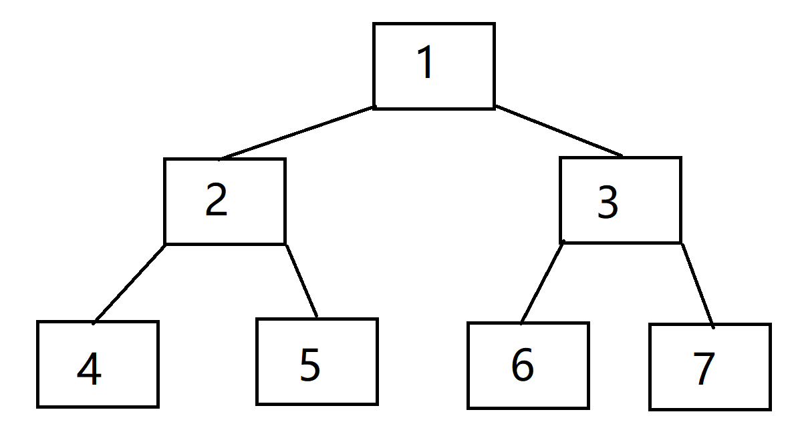
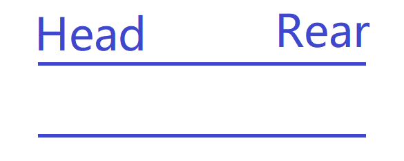
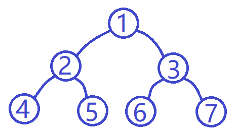
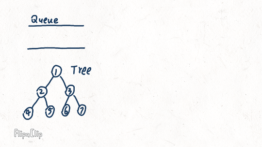

Binary Levelorder
发布于：2020-02-20 | 1024次阅读 | 标签: #数据结构 #C Language
levelorder or leveltravel 层次遍历，是一种根据树的层次关系的遍历方法
如下图所示简单的二叉树
level:
level1: 1
level2: 2 3
level3: 4 5 6 7
result:
1 2 3 4 5 6 7

levelorder different with preorder,inorder,and postorder.
levelorder need queue help to realize.
Theory
use above image to example
suppose now we have a queue same like this 👇

But now it's empty. Don't about that, it will be used soon
except queue we also have a root of Tree. Tree is this tree👇

Normal recursion can't both goto left child and right child.
at this time is queue show time.

Queue define
queue to store node pointer.
typedef struct Queue{
node* arr[100];
int head;
int rear;
}queue;
levelorder fuction
void levelorder(node* root, queue* q)
{
if (root) {
printf("%d ",root->val);
if (root->left) {
q->arr[q->rear++] = root->left;
}
if (root->right) {
q->arr[q->rear++] = root->right;
}
}
if(q->head != q->rear)
levelorder(q->arr[q->head++],q);
}
All code
#include <stdio.h>
#include <stdlib.h>
#include <string.h>
typedef struct TreeNode{
int val;
struct TreeNode* left;
struct TreeNode* right;
}node;
typedef struct Queue{
node* arr[100];
int head;
int rear;
}queue;
node* creatnode()
{
node* root = (node*)malloc(sizeof(node));
root->left = NULL;
root->right = NULL;
return root;
}
queue* creatqueue()
{
queue* q = (queue*)malloc(sizeof(queue));
q->head = 0;
q->rear = 0;
}
void levelorder(node* root, queue* q)
{
if (root) {
printf("%d ",root->val);
if (root->left) {
q->arr[q->rear++] = root->left;
}
if (root->right) {
q->arr[q->rear++] = root->right;
}
}
if(q->head != q->rear)
levelorder(q->arr[q->head++],q);
}
int main()
{
node* n1 = creatnode();
node* n2 = creatnode();
node* n3 = creatnode();
node* n4 = creatnode();
node* n5 = creatnode();
node* n6 = creatnode();
node* n7 = creatnode();
n1->val = 1;
n2->val = 2;
n3->val = 3;
n4->val = 4;
n5->val = 5;
n6->val = 6;
n7->val = 7;
n1->left = n2;
n1->right = n3;
n2->left = n4;
n2->right = n5;
n3->left = n6;
n3->right = n7;
queue* q = creatqueue();
levelorder(n1,q);
return 0;
}